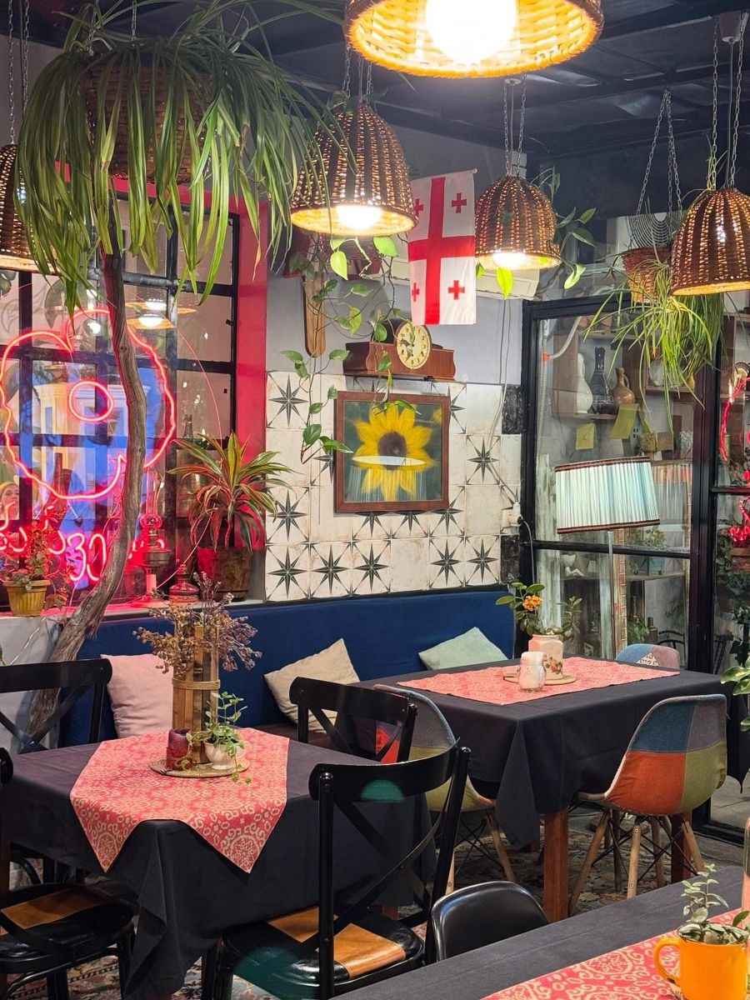

Sazón local
“Tamales La Bendición de Dios”
Soy María Eustaquia Padilla, y mi emprendimiento, “Tamales La Bendición de Dios”, está ubicado en el Corregimiento de Mingueo, Dibulla. Me dedico a la cocina doméstica y producción de alimentos, especializándome en la elaboración de tamales.
Explorar Nuestro Menú
Ubicación
Dibulla, La Guajira

Nuestra historia
Sobre Nosotros
Soy María Eustaquia Padilla, y desde el Corregimiento de Mingueo, Dibulla, dirijo mi emprendimiento “Tamales La Bendición de Dios”. Me dedico a la cocina doméstica y a la producción de alimentos, especializada en la preparación de tamales frescos elaborados con receta tradicional, ingredientes de calidad y el sabor casero que nos caracteriza.
Dibulla, La Guajira
tamales-la-bendicion-de-dios@sitiosproductivos.local

Momentos en cocina
Galería
Ven y disfruta de nuestros momentos culinarios